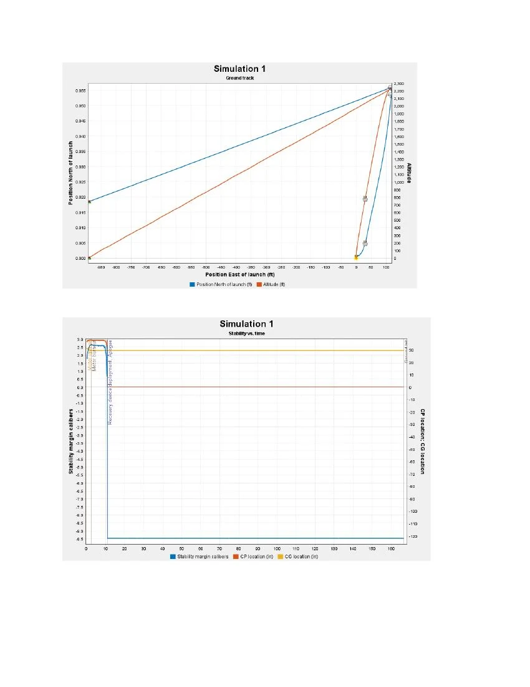

01 / CASE STUDY
01 / CASE STUDYNASA USLI payload electronics
I worked on electronics packaging, custom PCBs, and sensor integration for Swamp Launch’s NASA USLI payload.
Explore the projectUNIVERSITY OF FLORIDA · ENGINEERING PORTFOLIO
I’m an engineering student from Trinidad and Tobago, pursuing separate B.S. degrees in Mechanical Engineering and Aerospace Engineering at the University of Florida.
I’ve been curious about mathematics, physics, and space travel since childhood. Today, I explore those interests through rocket payloads, design, machining, and research.
A LITTLE ABOUT ME
Aircraft, rockets, satellites, and cars all capture my interest. I’m drawn to a career in aviation or aerospace design, with the possibility of moving into engineering management as I grow.
At UF, I’m involved in rocketry, research, teaching, and community leadership. Beyond those roles, I enjoy reading, yoga, debating, and cooking—and spending time in the lab and machine shop.
Get to know me ↗SELECTED WORK / 01—03
Explore my role, design decisions, and results in each project.
01 / CASE STUDYI worked on electronics packaging, custom PCBs, and sensor integration for Swamp Launch’s NASA USLI payload.
Explore the project 02 / CASE STUDY
02 / CASE STUDYI evaluated a slotted-lever mechanism for converting an air engine’s rotation into a guided slicing stroke.
Explore the project
03 / CASE STUDYI evaluated a preliminary rocket design targeting a 2,000-foot apogee and parachute recovery.
Explore the projectCURRENT WORK
I’m working on sensor-suite mechanics and load-cell integration with the Swamp Launch Rocket Team.
I lead mechanical design and integration of a CubeSat sensor suite, including mounts and sliders for sensor deployment.
Payload Mechanics Responsible Engineer · Sept. 2026–presentI’m developing mounting requirements and a verification approach for the load-cell subsystem of a static-fire test stand.
Tooling Development Responsible Engineer · Sept. 2026–presentLET’S CONNECT
I’m seeking engineering internships and job opportunities where I can contribute and keep learning.
Get in touch ↗